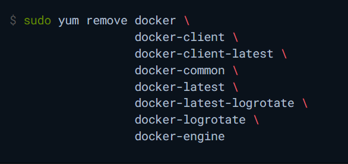
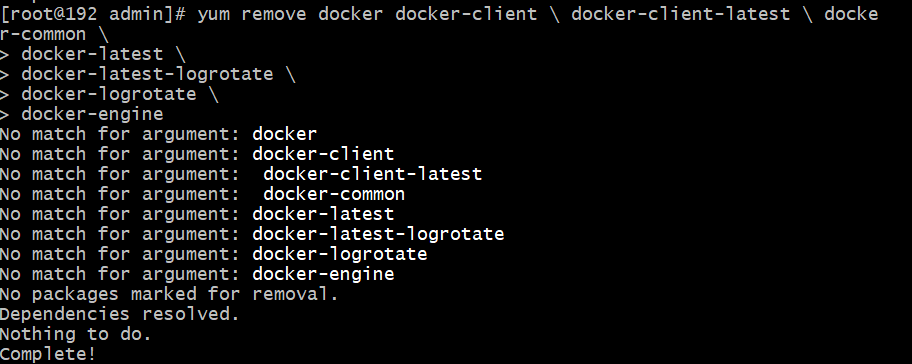
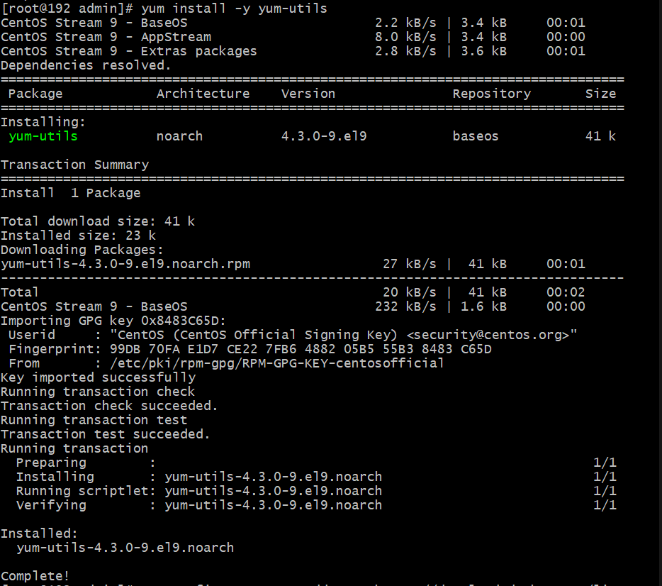
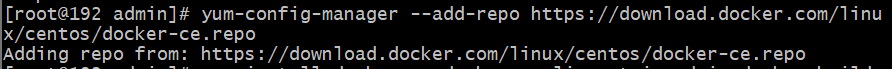
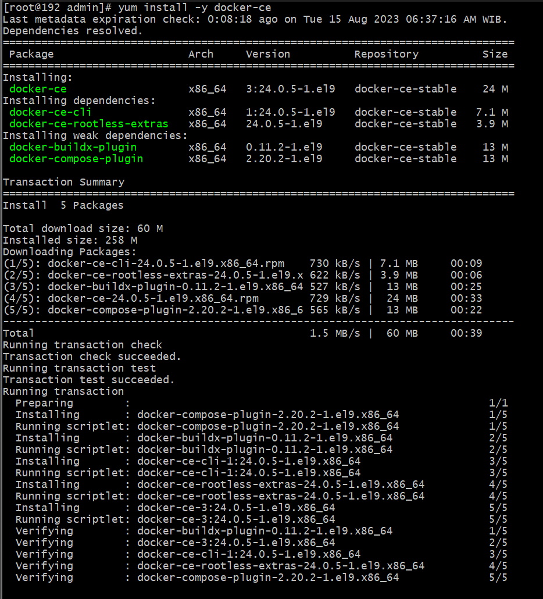
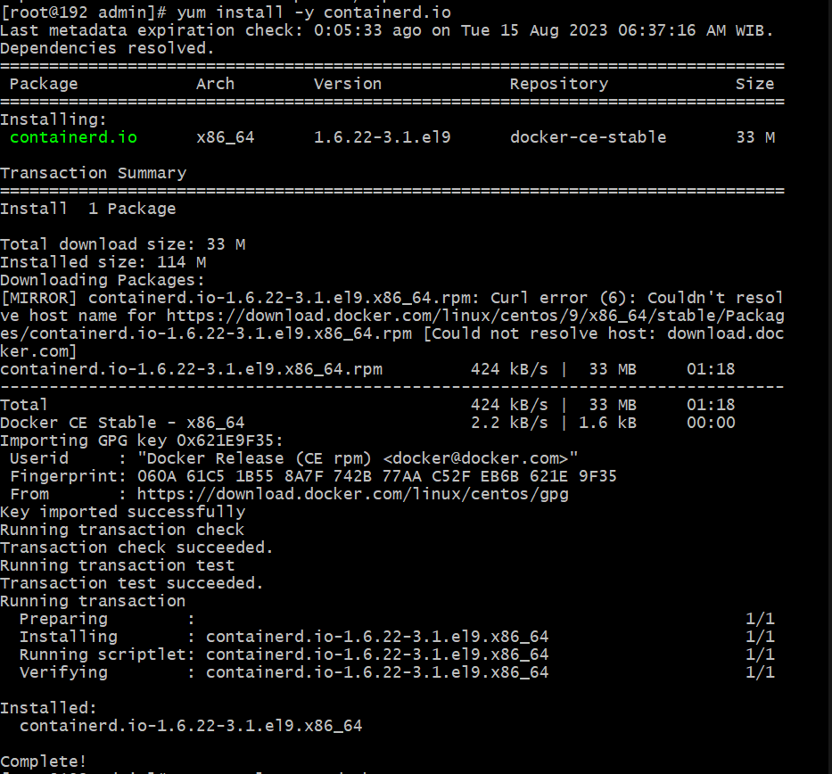
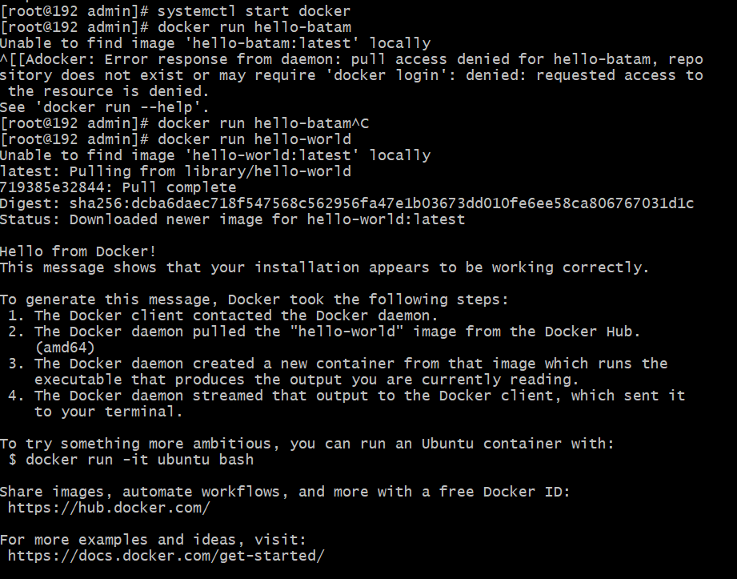
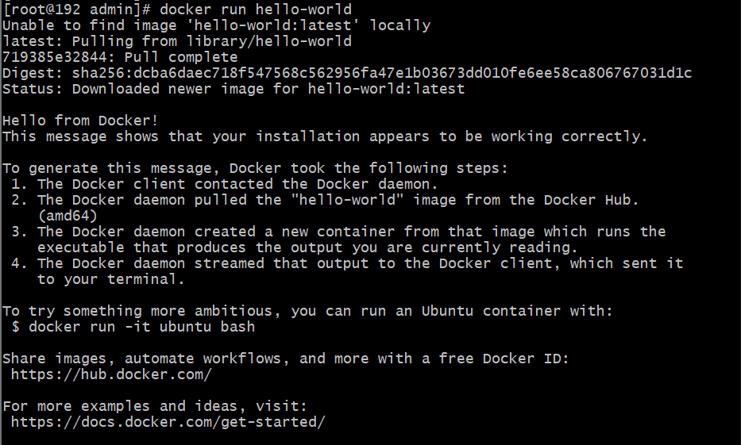

To get started with Docker Engine on CentOS, make sure you meet the prerequisites, and then follow the installation steps.
Requirements
To install Docker Engine, you need a maintained version of one of the following CentOS versions:
- CentOS 7
- CentOS 8 (stream)
- CentOS 9 (stream)
The centos-extras repository must be enabled. This repository is enabled by default, but if you have disabled it, you need to re-enable it.
Uninstall old versions
Older versions of Docker went by the names of docker or docker-engine. Uninstall any such older versions before attempting to install a new version, along with associated dependencies.
Progres:

yum might report that you have none of these packages installed.
Images, containers, volumes, and networks stored in /var/lib/docker/ aren’t automatically removed when you uninstall Docker.
Installation methods
You can install Docker Engine in different ways, depending on your needs:
- You can set up Docker’s repositories and install from them, for ease of installation and upgrade tasks. This is the recommended approach.
- You can download the RPM package and install it manually and manage upgrades completely manually. This is useful in situations such as installing Docker on air-gapped systems with no access to the internet.
- In testing and development environments, you can use automated convenience scripts to install Docker.
Install using the rpm repository
Before you install Docker Engine for the first time on a new host machine, you need to set up the Docker repository. Afterward, you can install and update Docker from the repository.
Set up the repository
Install the yum-utils package (which provides the yum-config-manager utility) and set up the repository.yum install -y yum-utils

sudo yum-config-manager --add-repo https://download.docker.com/linux/centos/docker-ce.repo

Docker Engine
1. Install Docker Engine, containerd, and Docker Compose:
To install the latest version, run:sudo yum install docker-ce docker-ce-cli containerd.io docker-buildx-plugin docker-compose-plugin
 
2. Start Docker
sudo systemctl start docker

3. Verify that the Docker Engine installation is successful by running the hello-world image.
sudo docker run hello-world

This command downloads a test image and runs it in a container. When the container runs, it prints a confirmation message and exits.You have now successfully installed and started Docker Engine.